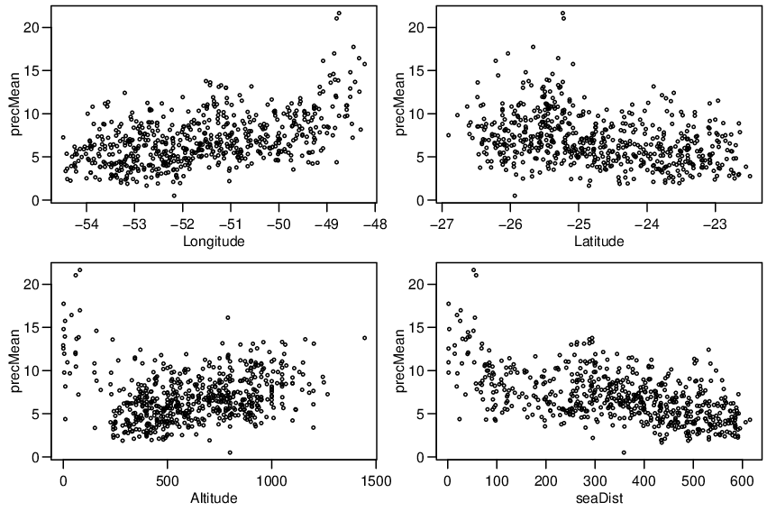
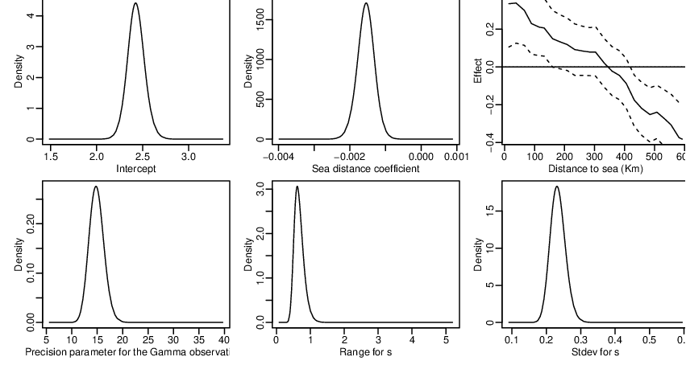
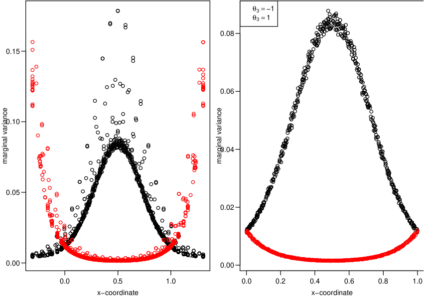

Figure 2.1: Locations of Paraná stations, altitude and average of daily accumulated
precipitation (mm) in January 2011.
This content is part of the book available at http://www.r-inla.org/spde-book, whose Gitbook version is freely available along all the code and datasets.
A very common data in spatial statistics is the climate data. We have collected data from the National Water Agency in Brazil, in Portuguese it is Agencia Nacional de Águas - ANA. The ANA collect data from many locations over Brazil. All these data are freely available from the ANA website.
We have daily rainfall data on each day of the year 2011 at 616 locations, including stations within the Paraná state and around its border.
We have these dataset on the INLA package and call it with
In the bellow code we show some data from four stations: the with missing altitude with less latitude, the stations with extremes longitudes and the station with greater altitude.
There are a few problems in this data set. There are seven stations with missing altitude and missing data on daily rainfall, which are displayed in red in the left plot in Figure 2.1.1. If this information is considerend when building a model it will be important to have it everywere in the state. There are digital elevation models that can be considered to find out the altitude at these locations. It can also be considered a stochastic model.
We will analyse the daily rainfall mean in January 2011. However, we do have 269 missing observations. So, we take the average over the number of days without missing data as follows
We will also consider the Paraná state border
We can visualize the locations in Figure 2.1.1, with the commands bellow
The size of the points on left graph are proportional to altitude of the locations. The cyan line in the east border is along the Atlantic Ocean. There are low altitudes near the sea, hight altitudes around 50 to 100 kilometers from this coast and from the mid of the state towards south as well. It decreases when goint towards the north and west sides of the Paraná state. The size of the points in the right plot is proportional to the daily average of the precipitation in January 2011. There are higher values near the coast.
In this subsection we analise the average of the daily accumulated precipitation for each of the 31 days in January 2011. It must be a positive and we will consider a Gamma likelihood. In the Gamma likelihood we have E(yi) = ai∕bi = μi and V (yi) = ai∕bi2 = μi2∕ϕ, where ϕ is a precision parameter. Then we have to define a model for the linear predictor ηi = log(μi), depending on the covariates F and the spatial random field x as follows

where, Fi is a vector of covariates (the location coordinates and altitude) tha will assumes a function detailed later and x is the spatial latent Gaussian random field. We will consider a Matérn covariance function with parameters ν, κ and σx2.
To make an initial exploration of the relationship between the precipitation and the covariates, we visualize some dispersion diagrams. After preliminary tests, it seems reazonable to construct a new covariate. That is the distance from each station to the Atlantic Ocean. The Paraná state border along the Atlantic Ocean is shown as cyan line in Figure 2.1.1). We can compute the distance from each station to the neighbor coordinate of this line.
To have this distance in kilometers we use the spDists() function from the sp package
We can see the dispersion plots in Figure 2.1.2 It seems to have a non well defined non-linear relationship with Longitude. Also, there is a similar, but inverse, relation with sea distance. We will build two models, one with longitude as covariate and another with distance to sea as covariate. We can compute fitting measures to proceed a model choise among this two options.

To consider a non-linear relationship from a covariate we can set a randon walk prior over its effect. To do that we can discretize this covariate in a set of knots and place the random walk over. In this case the term in the linear predictor due to sea distance (or longitude) is discretized into m classes considering the inla.group() function. The model can be chosen from any one dimensional model available in INLA, from rw1, rw2, ar1 or others. It can also be considered an one-dimensional Matérn model.
When considering intrinsic models as prior one should consider to scale it first, [Sørbye and Rue, 2014]. After it, the precision parameter can be interpreted as the inverse of the random effect marginal variance. It makes easier the process of defining a prior on it. The suggestion is to consider the PC-prior, [Simspon et al., 2017]. This can be done defining a reference standard deviation σ0 and the right tail probability u as P(σ > σ0) = u. Setting σ0 = 1 and u = 0.01
In order to define the spatial model we need to define a mesh. We first define a boundary around the points and use it to create the mesh
The projector matrix is computed by
The SPDE model considering the PC-prior derived in [Fuglstad et al., 2017] for the model parameters as the practical range, ∕κ, and the marginal standard deviation is defined as follows
The stack data is defined to include four effects: the GRF, intercept, west coordinate and distance to sea
We fit the two models using the same stack data. We just use different formula. For the model with west coordinate we have
We have link=1 in the control.predictor to track the function link to be considered in the computation of the fitted values.
For the model with distance to sea covariate we have
We can see in Figure 2.1.2 that the effect from distance to sea is almost linear. We them also fit the model considering this option For the model with distance to sea covariate we have
We have the negated sum of the log CPO from each model with
We got the summary of posterior distribution of the intercept with
Summary of the PMD for the gamma likelihood dispersion parameter
The summary for the practical range and the standard deviation of the spatial process is
The posterior marginal distribution for β0, the practical range (in degrees), the standard deviation for the spatial random field,
mean and 95% credibility interval of the distance to sea effect at Figure 2.1.2. We choose 1∕κ instead κ because 1∕κ is the range parameter and in this case is expressed in degrees units. Figure 2.1.2 we look

Suppose that we want to test the significance of the spatial random effect component on the model. To access the significance of this effect, we can fit the model without the spatial effect and compare the sum of the log CPO with the model including the spatial effect.
We can visualize the spatial effect projecting it on a grid. We want to have a regular grid where each pixel is a square with near 4 kilometers each side. We will use the (4/111) factor because each degree has aproximately 111 kilometers to give the size of the pixels in degrees
The Paraná state shape is wider than height and we will use it to define the grid. We consider the range along each axis and consider the size of the pixels to define the number of pixels in each direction. We will divide the range along each axis by the of each coordinate and roun it
The inla.mesh.projector() create a projector matrix. If a set of coordinates is not supplied it will create a grid automatically. We will change the limits and dimensions as desired
To improve the visualization we will assign NA for the pixels falling outside the Paraná state border. We use the function inout() from the splancs package to do that
The posterior mean and posterior standard deviation for the spatial effect at each pixel is visualized in Figure 2.1.4. In the top left of this figure one can see that the posterior mean varies from -0.6 to 0.4. This is the variation after accounting for the distance to sea effect. When comparing it with the standard deviation image, it seems to be considerable as the standard deviations aries around 0.2. The variation in the standard deviation is mainly due to the density of the stations over the region. At the top right plot in Figure 2.1.4 the first green region from right to left is near the captital city of Curitiba where the number of stations around is relatively bigger than in other regions of the state.
When the objective is to to predict the response a simple approach will be to add the other terms to the spatial field projected in the previous Subsection and apply the inverse of the link function. A full Bayesian analysis for this problem is the joint prediction with the estimation process. However, it can be computationally expensive when the number of pixeis in the grid is large. At the end of this subsection we show a cheap way for a specific case.
Considering the grid from the previous subsection we can avoid to compute the posterior marginal distributions at those pixels that are not inside the Paraná border. That is we consider the corresponding lines of the projector matrix from the projector object built earlier
We need to have the covariate for every pixel. In order to have it we can extract these coordinates from the projector object as well
Computing the distance to sea for each selected pixel
Suppose that our model is the one with the smoothed effect of sea distance. We have to discretize each computed distance in the same way as for the estimation data at the stations. We have to collect the knots and order it
Building the stack data with the prediction scenario and joining it with the data with the data for estimation
We can now use the mode of theta found as known values in the new inla() call. We can also avoid computing things not needed such as quantiles. We can also avoid non needed objects to be returned, such as the marginals distributions for the random effects and predictor. Since the number of latent variables is the main issue in this case, the Gaussian approximation will reduce a lot the computation time. It can be considered using control.inla=list(strategy=’gaussian’.
We have to find the index for the predictions in the grid. It can be done using the inla.stack.index() function. We also have to assign it into the right positions of a matrix with the same dimension as the grid. We will do it for both, the posterior predicted mean and its standard deviation

The posterior mean for the expected ranifall in January 2011 was higher near the sea and lower n the north west side of the Paraná state. Since the linear effect from the distance to sea will drive this pattern, the spatial effect in this case is there to fit deviations from this pattern. That is, the spatial effect is higher near the sea and summing up with the higher effect from distance to sea fitted the higher observed values there. The spatial effect is also higher in a region of the west side causing the expected values to be not so low there.
When all the covariates are smooth over space, it makes sence to make the predictions at the mesh nodes, where we have the spatial effect, and them project it on the grid. However, as long a covariate is not smooth over space this approach no longer makes sence. The advantage of this approach is that it is computationally cheap than to compute the full posterior marginals like in the previous subsection.
In our example the idea is to compute the distance to sea effect at the mesh nodes. Them, compute the linear predictor at the mesh nodes. By that, it is possible to predict the response at the mesh nodes and them do interpolate it.
The first step is to have the enviromental covariate at the mesh nodes
It consists in geting samples from the linear predictor at the mesh nodes. Them, interpolate it to grid and compute the expected value, in the response scale by applying the inverse link. When we do it for each sample, we can have any functional, for example, the mean and standard error.
Building the stack for predict into the mesh
Fitting the model again and asking for the configuration, which will include in the output the precision matrix for each hyperparameter configuration needed for sampling from the joint posterior
Sampling from the model
The first n elements of the latent field are the linear predictor for the observed data and the next m elements are for the location at the mesh nodes.
This content is part of the book available at http://www.r-inla.org/spde-book, whose Gitbook version is freely available along all the code and datasets.
In this chapter we shown how to fit a survival model using a continuous spatial random effect modeled throught the SPDE approach. We use the data presented in [Henderson et al., 2003]. The original code for the analysis in [Lindgren et al., 2011] is adapted here to use the stack functionality. In the section 2.2.1 we show how to fit a parametric survival model and in the section 2.2.2 we also show how to fit the semiparametric Cox proportional hazard model.
We load the Leukaemia survival data using
The mesh is builded using the following code
The projector matrix is obtained with
Defining the SPDE model considering the PC-prior derived in [Fuglstad et al., 2017] for the
model parameters as the practical range,  ∕κ, and the marginal standard deviation.
∕κ, and the marginal standard deviation.
The model formula, including the intercept, covariates and the SPDE model is
The trick for building the data stack is to include all the variables needed to the formula. So, for the response we have the time and the censoring pattern cens. The spatial stuff, the intercept and the covariates are included like in the other models.
Now, we just had to fit the model. In this example we use the ’weibullsurv’ likelihood. Hovewer, other parametric likelihoods can be used as well.
The intercept and the covariate effects can be extracted with
We visualize the spatial effect into the map. The map of the districts is also available into the INLA package. First, we define a projection from the mesh into a grid
The posterior mean and standard deviation are in Figure 2.2.1. As a result, the spatial effect has continuous variation along the region, rather than constant inside each district.

The Cox proportinal hazard (coxph) survival model can be written as a Poisson regression. In R-INLA it is done internally using the inla.coxph() function. We need this function to pre-prepare the data before using it as input for the inla.stack() function. So, we have to supply the data converted into the Poisson regression data to inla.stack() to prepare then the data stack in order to have the SPDE model included in the model.
We first define a formula without the spatial effect to have the data extended to the Poisson model.
For comparison pourpose we can fit this model using
Then, we have to include the spatial effect in the formula
The projector matrix can be built with
And the stack is built considering the relevant data from the output of the inla.coxph() function
Then, we only had to use it considering the Poisson likelihood
We can compare the results with the result from the survival package.
The spatial effect fitted very is similar to that from the Weibull model
This content is part of the book available at http://www.r-inla.org/spde-book, whose Gitbook version is freely available along all the code and datasets. We strongly recommend to consider this.
In this example we will show how an example of the model proposed in [Ingebrigtsen et al., 2014]. This is a way to include explanatory variables (covariates) in both the SPDE model parameters, the local precision and the range.
We start to remember the definition for the precision matrix considering the equations (1.10) and (1.11). Considering α = 1 and α = 2 we have
The approach is to consider a regression like model for log τ and log κ. In order to implement it, the precision matrix are written in a more general way as
|
| (2.1) |
where M(0), M(1) and M(2), are provided from the finite element method - FEM based on the mesh. For α = 1 (ν = 0), we have M(0) = C, (M(1))ij = 0 and M(2) = G. For α = 2 (ν = 1), we have M(0) = C, M(1) = G and M(2) = GC-1G.
All D(0), D(1) and D(2) are diagonal with elements used to describe non-stationarity. The definition of these matrices are
| D(0) = diag{D i(0)} = diag{eϕi(0) } | ||
| D(1) = diag{D i(1)} = diag{eϕi(1) } | ||
| D(2) = diag{D i(2)} = diag{ϕ i(2)} |
where
 |
with the B(k) : n-by-(p + 1) user defined matrix.
The default stationary SPDE model uses B(0) = [010] (one by three) matrix for the local precision parameter τ, B(1) = [001] (one by three) matrix for the scaling parameter κ, and B(2) = 1. When these basis matrices are supplied as just one line matrix, the actual basis matrix will be formed having all lines equals to this unique line matrix.
In the next section, we add one of the location coordinates as a fourth column for B(1) in order to build a non-stationary model.
We now will define a model were the local precision depends on one of the coordinates. Note that in order to build a precision matrix defined in the equation (2.1), one also needs M(0), M(1) and M(2) defined at the mesh nodes.
First, we define a polygon to define a mesh. We define an unitary square
Now, we define the non-stationary SPDE model. We want to define a model where the local precision depends on the first coordinate. So, we have to consider a fourth column for B(1), supplied as in the B.tau argument of the inla.spde2.matern() function. By doing it, we also do need to set prior θ according to its new dimension, a three length vector. The default is a Gaussian distribution and we just need to specify the mean and precision diagonal, two vectors as follows:
We can have a feeling about the model just defined setting values for θ, build the covariance and look at the marginal variance (our interest). We consider two different cases:
To clarify, we compute both covariance matrix implied. The covariance matrix of
A summary of the variances implied (diagonal of the covariance matrix) for both covariance matrices is obtained with
We can see the marginal variance at the mesh nodes considering both process in the Figure 2.3.2. Commands to make the figure 2.3.2:

In the plot at left we have some marginal variances that does not follows the pattern. For example, it is clear that some points in the right plot does not follows the expected pattern when x - axis is near 0.5. These points are marginal variances computed for the mesh nodes for y - axis near bellow 0 or above 1, outside the domain. This is expected as the variance of the approximation happens to be bigger at the boundary of the mesh.
Both precision matrix defined previously consider that the locations are the mesh nodes. So, the simulation made with it is a realization of the random field on each point of the mesh nodes. We use the same seed for each simulation, just to show it.
We compute the standard deviations for both the samples considering groups defined in accord to the first coordinate of the locations:
One can see the simulated values projected to a grid in Figure 2.3.3. We use a projector matrix to project the simulated values in the grid limited in the unit square with limits (0,0) and (1,1) with
The linear constraint is common for models intrinsic models, such the random walks in one or two dimensions. This is not the case for the models we have defined in this chapter. However, we would like to show the use of linear constraints for the SPDE models.
Because the SPDE models are based in the Finite Element Method (FEM) approximation, the sum-to-zero restriction in this case is non trivial. The issue is that

Using A = (1,...,1) instead of diag(C) leads to very bad behavior for irregular meshes. So, if we want a linear constraint, we need to use C.
The C matrix is obtained by the inla.mesh.fem() function and is available directly in outputs of inla.spde2.matern() function. So, we do the simulation with
So, we have
The model can be fitted easily with the data simulated at mesh nodes. Considering that we have data exactly at each mesh node, we don’t need the use of any predictor matrix and the stack functionality. Because we have just realizations of the random field, we don’t have noise and need to fix the precision of the Gaussian likelihood in a high value, for example on the value e20
We look at the summary of the posterior for θ (joined with the true values). For the first sample
Suppose that we have the data at the locations simulated by the commands below
Now, we do the projection of the simulated data from the mesh vertices to these locations. To do it, we need a projector matrix
Now, because the this locations aren’t vertices of the mesh, we need to use the stack functionality. First, we need the predictor matrix. But this is the same used to ’sample’ the data.
And we define the stack for each one of the samples
And we fit the model with
The true and summary of marginal posterior distribution for θ:
To make the visualization more good, we take the logarithm of the variance.
We visualize, for both random fields, the simulated, the predicted (posterior mean) and the posterior variance in Figure 2.3.5 with commands below
We see in the Figure 2.3.5 that the predicted values are similar to the simulated ones. Also, we see that the posterior variance of the first model increase near 0.5 for the first coordinate. And we see the opposite for the second random field. Also, we see that the variance of the first is greater than the second.